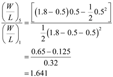

Refer to Fig.15.13 in the text book.
Consider the current of transistor,  operating in saturation to determine the ratio of width to length ratios of the transistors,
operating in saturation to determine the ratio of width to length ratios of the transistors,  with
with  .
.
Consider the current of transistor  operating in triode region.
operating in triode region.
Thus, equate the currents considering the velocity saturation effects.
At  , maximum value of the ratio of width to length ratios of the transistors,
, maximum value of the ratio of width to length ratios of the transistors,  is obtained.
is obtained.
Substitute for  , 0.5 V for
, 0.5 V for  and
and  for .
for .

Thus, maximum value of the ratio of width to length ratios of the transistors,  , for , considering the velocity saturation effect is .
, for , considering the velocity saturation effect is .
Calculate the value of the ratio of width to length ratios of the transistors,  considering the situation that only the transistor
considering the situation that only the transistor  is operating in velocity saturation.
is operating in velocity saturation.
Thus, equate the currents considering the velocity saturation effect for only  .
.

At , maximum value of the ratio of width to length ratios of the transistors,  is obtained.
is obtained.
Substitute for  , 0.5 V for
, 0.5 V for  and
and  for and 0.6 V for .
for and 0.6 V for .
Thus, the maximum ratio of width to length ratios of the transistors,  taking velocity saturation into account is times the ratio of width to length ratios of the transistors,
taking velocity saturation into account is times the ratio of width to length ratios of the transistors,  obtained without considering the velocity saturation.
obtained without considering the velocity saturation.